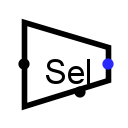

| Library: | Plexers |
| Introduced: | 2.0.5 |
| Appearance: |  |
Given an input of several bits, this will divide it into several equal-sized groups (starting from the lowest-order bit) and output the group selected by the select input.
For example, if we have an eight-bit input 01010101, and we are to have a three-bit output, then group 0 will be the lowest-order three bits 101, group 1 will be the next three bits, 010, and group 2 will be the next three bits 001. (Any bits beyond the top are filled in with 0.) The select input will be a two-bit number that selects which of these three groups to output; if the select input is 3, then 000 will be the output.
When the component is selected or being added,
the digits '0' through '9' alter its Output Bits
attribute,
Alt-0 through Alt-9 alter its Data Bits
attribute,
and the arrow keys alter its Facing
attribute.
None.
None.